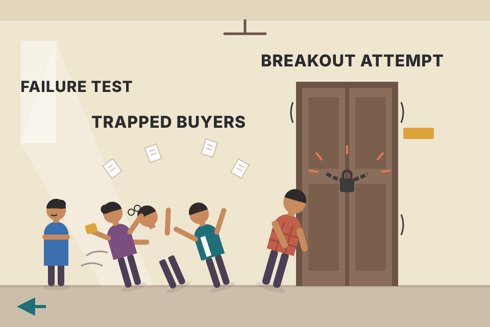
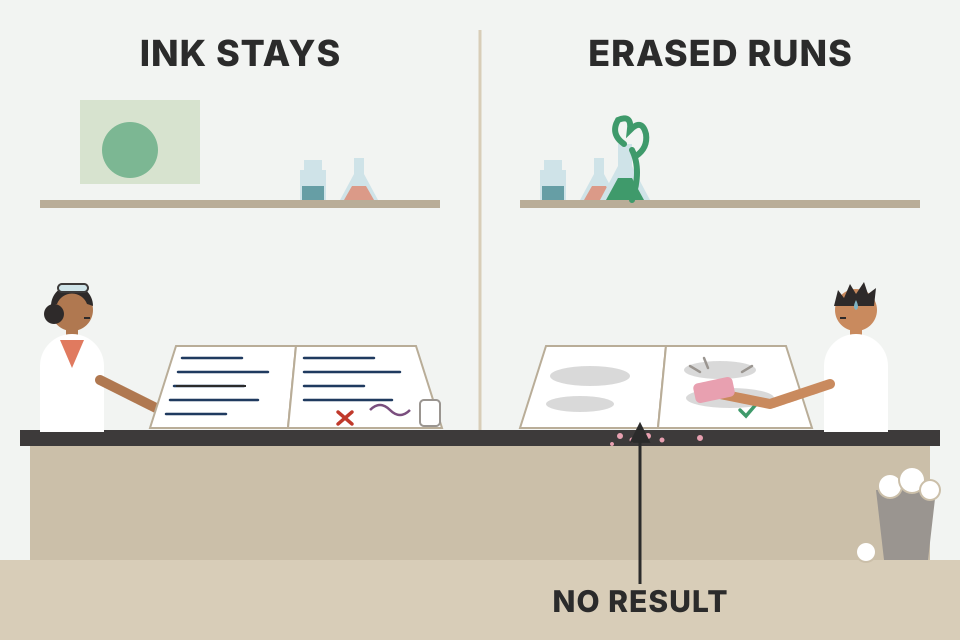
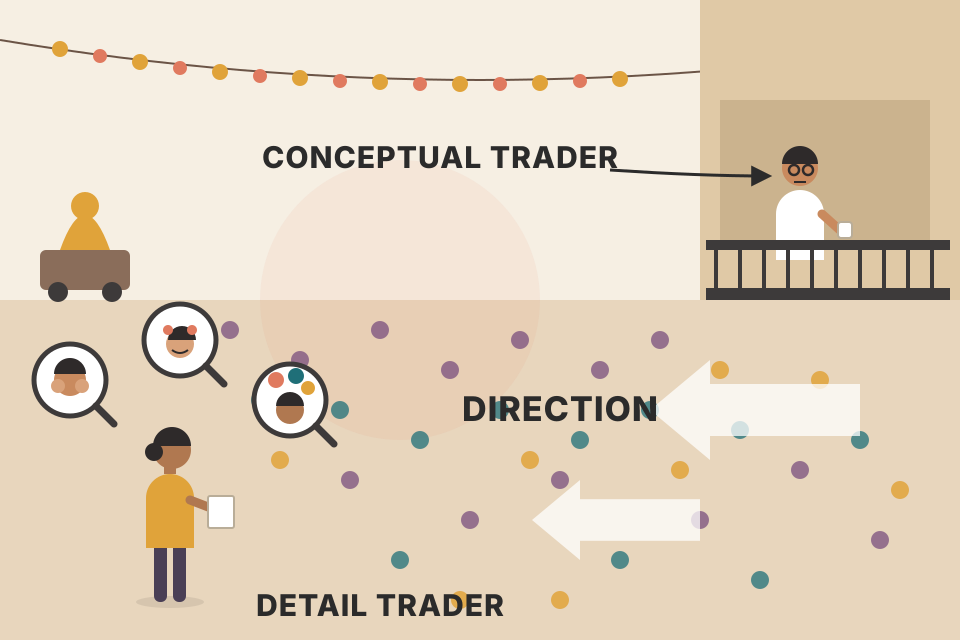
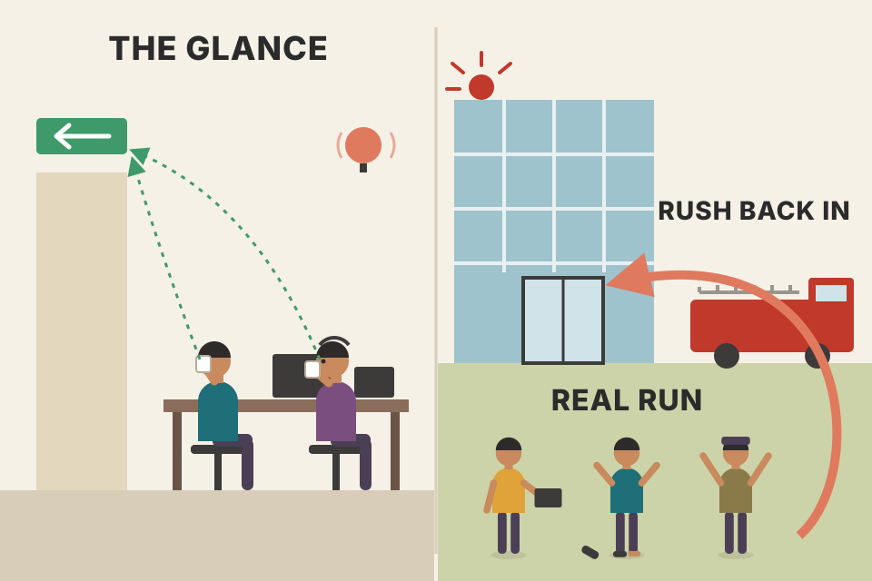

Module 6 in plain words and in the workbook's order: the failure-test pattern and how to backtest it, how to papertrade properly, how to research classical chart patterns without fooling yourself, a century of Dow history, and Grimes's essays on what technical analysis can and can't do, on uncertainty, on strategy versus tactics, and on reading followthrough. Every price chart here is simulated, built to show one idea; none of it is market evidence.
The module has two halves. The first half is the course work: a pattern to test, a way to test it live (papertrading), a research project, and a long look at market history. The second half is a set of readings and blog essays that explain why Grimes tests everything and how he still uses judgment. The failure test runs through both.
The pattern: price pushes beyond a support or resistance level, and the push fails. It is two things at once: a test of the level and a failure to break it. Grimes is clear that he didn't invent it. Wyckoff described the same thing as springs (a false break under support) and upthrusts (a false break over resistance). Victor Sperandeo calls it a 2B entry (the workbook spells his name "Sperendeo"). Other authors have written about it too; it's a simple, lasting piece of market behaviour.
It is often an aggressive countertrend trade: you're betting against the direction of the push. Even if you never trade it, watch for it: failures often mark at least the short-term end of a trend, and sometimes a major turning point.
The module intro also lists what else is coming: papertrading (critics call it worthless because it can't copy the emotions of real money; Grimes says, done properly, it's another statistical check of your edge, and if you can't make money on paper you won't with real money), basic statistics on a trader's performance and how they change over time, a deep look at classical charting (its history, and examples from the original sources, with their uses and limits), and nearly a century of US stock market history, so you can read patterns in terms of supply/demand imbalances, surprises and probabilities.

Someone pushes a door that looks locked. If it swings open, they walk through (a breakout). If it rattles and stays shut, everyone who leaned on it to fall through stumbles back. The failure test is the rattle: the push happened, nothing gave way, and the people who bet on the door opening now have to back out.
A level that many people can see collects orders just beyond it: stop-losses from people on the wrong side, and breakout entries from people waiting for the break. The probe fills those orders. If fresh buyers (for an upthrust) don't keep coming after that, there's nothing left to hold price up: the stops and breakout buys were a one-time burst, and the people who just bought the break are now losing and become sellers. The close back inside the level is the first sign that the burst found no follow-up. Section 16 is Grimes's own account of this mechanism.
vwap_volume_profile_explained.md describes a liquidity sweep as "a false break of an old high/low": the same pattern under a newer name. In your backtest the full checklist (sweep + higher-timeframe) was better in 26 of 36 pairs.By now testing a pattern should feel routine (you did it for pullbacks and the anti). The failure test is simple and clear-cut, but it has a problem: it often sets up countertrend, and when it fails it can produce stunning, dramatic losses. It may need different psychology and trade management from the with-trend pullbacks you tested first. So while you test, judge two things: the objective results, and how comfortable you'd have felt taking each trade.
The test harness is honest only if the simulator is. On the random walk there are no stop clusters and no memory, so no force pays for the trade. In my runs it comes out slightly negative (around −0.1R per trade): the pessimistic same-bar rule, gaps through the stop, and stops that sit very close to the close all cost a little. The mean-reverting market is built to pull price back toward the middle of each range, so fading a failed break earns something there (roughly +0.15 to +0.4R with 20–40-bar levels, about zero with 10-bar levels). The trending market punishes it (roughly −0.25 to −0.35R): that's Grimes's warning about countertrend losses, in numbers. Watch the worst trade: gaps make losses bigger than −1R. Setups risking under 0.1% of price are skipped. None of this is evidence about real markets; the edge in each simulated market is whatever I built into it. The harness is the method, ready for your NSE data.
Your trading_equations.md has the expectancy formula with a worked example (51.5% wins at 2R → 0.545R per trade), and backtest_results_summary.md notes that every losing run had a win rate below its break-even p* = (L + c)/(W + L).
The usual view gets two things right: the hardest problems in trading are probably psychological and emotional, and papertrading doesn't copy those emotions. It then wrongly concludes papertrading is worthless. Grimes's view: papertrading is a forward test of your edge. A backtest always looks back at old data; a papertrade does the same testing on live data, so you face the unknown future at every step.
A profitable paper record doesn't guarantee real profits; plenty of people trade well on paper and lose when they go live. But the other direction is close to certain: if you can't make money papertrading, you're unlikely to make it with real money.
How to get value from it: take it very seriously. Anything that adds emotional "charge" or accountability helps, such as working in a community and sharing results. And never recreate history: don't look at a bad decision from a few days ago and quietly change it ("what if I had just…"). Changing even one past decision invalidates the whole record.

A lab notebook. You can write tomorrow's experiment however you like, but once a result is written, it stays. A scientist who rubs out the failed runs doesn't have a better result; they have no result.
The 60 simulated trades have zero edge by construction (40% winners at +1.5R, 60% losers at −1R). Each "edit" turns one of the worst losses into a skipped trade, the kind of change "what if I had just…" makes. A handful of edits turns a coin-flip system into one that looks good. Slippage does the reverse: a few hundredths of R per trade is small per trade but large over many trades. That's why Grimes asks you to be pessimistic about fills.
backtest_results_summary.md already ends with a papertrading list: momentum rotation + weekly pullback for 3–6 months, and the 5-min ORB long + short only as "a lead to paper trade, not proven". This section is the method for doing that honestly.The course has shown many classical chart patterns. This project asks you to look for the statistical edge behind some of them, aware of two complications:
Then: write clear rules for identifying the patterns; move through charts bar by bar and mark patterns as they appear. Be very careful about future information leaking in: even one glance ahead invalidates the test. Keep theoretical papertrading records of trades around the patterns. You can also build the research as an event study, by hand or with some automated pattern checking. The aim is insight into the edge behind the patterns, and perhaps patterns for your own plan later.
The chart tests "buy at a pivot low" on 300 simulated random walks, where no strategy can have an edge. A pivot low is only known k bars later, once the next k lows are all higher. The "peeked" version buys at the pivot bar itself, using knowledge it couldn't have had; the "honest" version buys when the pivot is confirmed. The peeked version shows a big edge out of pure noise; the honest one is the same as buying any bar. That's how one glance ahead poisons a manual test: your eye has already seen which lows held.
backtest_results_summary.md): the same discipline against future information, done by machine.The workbook prints weekly charts of the Dow's whole history, mostly one decade each, from a "zero year" to the same year ten years later, plus two snapshots centred on the 1929 and 1987 crashes, so you can connect what came after to those shocks. Below each decade chart is a block of summary statistics. Grimes's four suggestions:
The first chart (pdf p216) matters for a second reason: that early-1900s market is the one in which Charles Dow wrote his early Wall Street Journal editorials, and from which most classical technical analysis was derived. The 1929 snapshot is shown without commentary (pdf p219), to make you feel the size of the crash and the decline after it, in percentages. The 1987 snapshot (pdf p225) shows a market absorbing a large, volatile shock whose causes still aren't fully understood.
Three patterns jump out of the printed numbers (my reading of them, not Grimes's commentary). 1) In all twelve blocks, the date of the biggest one-day gain is the same as the date of the highest 20-day volatility. The best days don't come in calm bull markets; they come inside crashes, often a day or two after the worst day (3/14→3/15/1907, 10/28→10/30/1929, 5/28→5/29/1962, 10/19→10/21/1987). 2) Big moves are far more common than a bell curve allows: compare the bars with the dots in the second chart. 3) A day's size in σ depends on how calm the market was before it. That's why the 1980s' biggest σ-loss is 10/13/1989 (−13.2σ), not the −22.6% crash of 10/19/1987: the 1987 crash came after a week of already-violent days, which raised the yardstick.
The 1950s block lists the biggest percentage loss as −6.5% on 9/26/1955 and the biggest volatility-adjusted loss as −18.9σ on the same day. Divide: 6.5% ÷ 18.9 ≈ 0.34%, the typical daily move the market was "expecting" just before. Annualised (× √252) that's about 5.5% a year, a very quiet market, far below the decade's 10.4% average Hvol(20). A quiet market plus a sudden political shock = a huge σ number. This exact event is one of the daily-bar charts in section 06 (pdf p235). (Arithmetic mine; it assumes σ is a trailing standard deviation of daily returns, which this module doesn't spell out.)
index_funds.md calls the index "the benchmark to beat". The decade returns (from −38.5% in the 1930s to +309.1% in the 1990s) show how much the start and end dates of any comparison matter.Next comes a set of daily-bar charts that zoom into major events, so you can study the action around each one. Use your work so far:
The list isn't complete, but you'll see common elements in how the market absorbs information and reacts to shocks; understanding them builds your intuitive read of market action.
| Chart in the workbook | Index | pdf page |
|---|---|---|
| The 1929 Crash | Dow Industrials | p229 |
| The Bottom after the 1929 Crash | Dow Industrials | p230 |
| World War II (four panels, late 1937 to 1946) | Dow Industrials | p231–234 |
| Eisenhower's Heart Attack (1955) | Dow Industrials | p235 |
| The Cuban Missile Crisis (1962) | Dow Industrials | p236 |
| Fall of the Berlin Wall (1989) | S&P 500 | p237 |
| 1997 Asian Financial Crisis (and aftermath) | S&P 500 | p238 |
| The run-up in the Nasdaq, the dot-com crash, and what followed | Nasdaq Composite | p239 |
| The 9/11 Attacks | S&P 500 | p240 |
| The 2007–2009 Financial Crisis (three panels) | S&P 500 | p241–243 |
| The 2010 Flash Crash | S&P 500 | p244 |
Two things to read on every real chart. Before: a shock that lands on a market already falling meets sellers who were already leaning that way; one that lands on a quiet rising market surprises everyone. After: the volatility panel jumps on the shock day and stays high for 20 bars whatever happens next, because the window remembers the shock. So "volatility is high" alone doesn't tell you whether the shock will be recovered; the price structure after it (holding the low and rebuilding, or making lower highs) does. This chart is a simulation of the questions, not of any real event.
The assigned readings are from Grimes's The Art and Science of Technical Analysis: Market Structure, Price Action, and Trading Strategies (Wiley, 2012). That book is not in your library (the PDF named after it is this workbook), so the pages are listed for reference:
| Pages in the 2012 book | Topic | Used on this page |
|---|---|---|
| 149–153 | The failure test | sections 01, 02, 16 |
| 314–326 | Failure test examples | sections 14–17 |
| 254–262 | Basic trading stats | section 02 |
| 389–398 | Trading stats | sections 02, 03 |
The rest of the module is a set of reprinted essays, each one a plate below, in the workbook's order: challenges to traditional technical analysis, thinking conceptually about patterns, the uncertainty of predictions, the market as more than a math problem, execution tactics, and four pieces on the failure test.
The starting point. After some trading success, Grimes began testing ideas with numbers and found that almost nothing in the technical analysis literature worked as advertised. Experts told him not to focus on statistics and to "make it work for you", with vague appeals to authority. Digging into that authority, he found most of the work came from an era with little data, spotty access to market data, and few ways to check whether anything worked; and the things he tested mostly tested poorly.
What is technical analysis? He goes back to Edwards and Magee (1948). They split traders' methods into two schools: fundamental (which they called "statistical"; to them that meant company financial statements and competitive position, not statistics in today's sense, so it's just a change of words) and technical, with a third, cyclical, approach then growing (with what they called a lunatic fringe). They defined technical analysis as studying the market's own action instead of the goods traded: recording the history of trading, usually as a picture (price changes, volume), and inferring the probable future trend from that picture.
Here Grimes puts his finger on the central problem: that definition makes TA a visual discipline. If you accept it, TA is mostly untestable and highly subjective: people see the same picture differently, and who's to say who's right? You could track one analyst's calls, but you can't test the method. His broader definition: technical traders decide using information contained in past price changes themselves (plus related market data such as volume, whether trades hit the bid or the offer, and moves in related markets). Fundamental analysis brings in outside factors. With that definition, progress is possible.
Charts are useful. He isn't saying throw charts away. A chart is a visual display of data, and it may engage more of our minds than a list of numbers, including inductive reasoning and other ways of knowing beyond step-by-step logic. If you mock charts because of people spouting long strings of pattern jargon, your problem is with how charts are used, not with charts.
There is no free lunch. A core principle of finance. Grimes thinks core truths must be simple enough to pass his "smart eight-year-old" test, and lists the other simple principles: (1) a dollar today is worth more than a dollar tomorrow; (2) people should demand more reward for more risk; (3) people sometimes make mistakes. Markets are competitive, full of smart people with money. Arbitrage (essentially free money) exists but is rare, disappears quickly, and often only works for people with special access. He tells the joke about the economist who won't pick up a $1,000 bill on the pavement because it can't be there: there's truth in it. Gifts are very rare; don't count on them.
There are patterns in prices. Here he departs from academic work that says prices are wholly random walks; more research supports some patterns and some predictable elements. That alone tells you how thin the edges are. Don't dismiss academic research: researchers are educated, intelligent, and look carefully at data. When they disagree, it's sometimes method, but more often different standards of proof, and edges that exist only in some markets for some periods. His own work finds some simple patterns that work with some reliability, but the edges are small.
Every one of these six charts is a pure random walk: a coin flip each day, nothing else. Look for double tops, trendlines, breakouts, head-and-shoulders. You'll find them. That's what "untestable and subjective" means in practice: the picture always offers a story, whether or not anything real is there.
"No free lunch" and "there are patterns" fit together once you think in sizes. If a pattern were big and obvious, competitive traders would trade it until it shrank. What survives is small: a tilt of a few percent in the odds. A tilt that small is invisible to the eye on one chart and only shows up when you count many cases. That's why Grimes's definition (information in past prices, tested) matters more than the visual one.
trader_returns_reality.md: most retail traders lose, which is what "no free lunch" looks like from the outside.We can test patterns objectively, but carefully. A common defence of TA is "you can't test it; find what works for you", so if it fails, the fault is yours (or your psychology). Grimes turns a statistics proverb around: correlation doesn't imply causation, but causation does imply correlation. A real, important relationship can't be invisible in the data. So if something works, it works objectively:
Be humble: every test is a joint test of the idea and of the way you tested it. You might have built a bad test. Still, asking the data is the right approach. Little of this work is done in TA. The Bollinger test takes a few hours with free data, yet nearly every TA book repeats the bogus 95% figure; it would only hold if price deviations from a moving average were normally distributed, and they clearly aren't. Fibonacci is harder to test and needs many assumptions; if you find nothing, maybe you asked badly. But after many ways of asking find no support, ask how useful it can be: if something is a strong influence on price, why is it so hard to find?
Run Grimes's few-hours test on simulated data. The band is the 20-bar average ± k × the 20-bar standard deviation of closes; the readout counts how many closes land inside. Even with perfectly bell-shaped daily returns, the result isn't the textbook 95.4%: the deviation of price from its own moving average isn't a bell curve, because the price wanders and the average lags. Fat tails and trends push the number further off. The claim fails before you even reach real data. (Simulated; your real-data test may give different numbers.)
It's easy to be misled by patterns. We're wired to find patterns whether or not they exist (faces in clouds, voices in a seashell), and we give too much weight to memorable events: a run of trades that lost overall can be remembered as a win because of one big, exciting trade, so review trades carefully. You can't fix this wiring; you must counterbalance it with objective, statistical analysis.
Be literate in basic math and finance. No way around it (no free lunch). Learn everything you can about markets, finance, the world, human behaviour. Drawing a trendline needs no math; knowing what's likely after it's touched needs a real grasp of statistics and probability. Learn to analyse data: Excel is not ideal but better than nothing and quick to learn; consider Stata, R, Python or another real programming language. You don't need to be a programmer, but you need the skill to rip through a dataset.
Think objectively. TA must move toward the objective tendencies of price, with correct methods, careful review, and a willingness to discard what isn't useful. Quant analysts already do this; traditional TA is stuck, maybe because of its visual roots, maybe from laziness and resistance to change. A friend pointed out that many TA certification programmes forbid criticising other technicians' work: supportive, perhaps, but against science, which depends on reviewing, extending and correcting others' work. Why should TA avoid peer review?
Intuition is real. Statistics is critical, but there's a place for intuition: other ways of knowing exist, intuition is valuable and can be trained. Grimes has done research on what he calls the "fringe" of perception and reports statistical support for intuition, even bordering on what people call ESP. Some aspects of markets and of our own decisions may not be quantifiable, and that's fine. But intuition must be guided by how markets really move. He once sat in a class where new intraday traders were told to hold stocks overnight after very large moves because they "usually continue". In fact one of the strongest statistical tendencies is for stocks to mean revert after large one-day moves. Why train intuition against a strong bias? You may sometimes trade against it, but know which way the wind usually blows.
Why does this matter? Responsibility. If we write books or blogs or share ideas online, we should make sure our tools are the best they can be. Trading your own money, you owe it to yourself and your family; managing client money, you owe the client even more. The point of the work is to manage risk and find opportunity, which needs hard questions about our methods. Ask them, and don't fear the answers.
price_physics_basics.md treats mean reversion as a spring (short-term reversal over about a month), the same force behind Grimes's training-class story.Grimes started like many traders, deep in classical TA: hours studying pattern variations (often on hand-drawn graph-paper charts), measuring ratios, comparing averages, studying highs and lows inside bars inside patterns. After making some money, he looked objectively at what he did and found an 80/20 rule of a different kind: over 80% of it was a waste of time.
Every tick matters? There are two ways to think about patterns. The detail-oriented way (much of classical charting, and modern books running to thousands of pages) argues over pennants versus flags and explains every bar. Context still matters there: a rising wedge after a sharp drop, in a quiet market, or after a strong rally can mean different things (that's what people look at when they check a higher timeframe). These approaches are seductive because they offer answers; you can always explain every jiggle in hindsight. The problem: markets are highly random and noisy. Some precise things do matter, but most of what we see is misleading at best and dangerously seductive at worst. Not every tick matters. In 2007 at the NYMEX, he saw gold futures make a huge intraday jump because a legendary trader walked into the pit, out of boredom, and others in a quiet afternoon read it as a sign of doom. That kind of thing happens all the time. Some moves are just mistakes, or spill over from related markets: there's an ugly spike on XLE charts from years back that was Grimes's own error while hedging a large position. If you read meaning into every tick, admit that a good share of it is meaningless, then start separating what matters.
Thinking conceptually is the better way: think about what is happening. A market reverses strongly off its lows, shoots higher, then goes quiet without giving much back: that's a market consolidating to go higher (his S&P 500 chart on p255 shows this, with a tight consolidation under recent highs). Get the big picture and direction right and the rest is easier. Do you need the exact shape, the slope of the sides, the retracement ratio? He thinks not. The concept gives a big-picture plan: on that chart, be long. The real challenge is that you must still enter and exit at precise prices. Reconciling a "fuzzy" strategic view with precise execution (tactics) can be done, and it's an important part of building your own method (section 13).

Squint at a crowd from a balcony. You can't see faces, but you can see which way the crowd is moving. The detail-oriented trader is down in the crowd reading every face; the conceptual trader is on the balcony.
The story here has three parts: a strong reversal, a sharp rally, and a quiet hold near the highs. Quiet after strength means sellers aren't showing up even though buyers have paused; when buyers return, there's little in the way. The smoothing slider is a literal squint: as it rises, the noise and the spike disappear and only the three-part story is left. The spike is a reminder that one bar can be pure accident.
Theory rests on history, but what matters most to traders is the future. So why do so many analysts say "we don't predict"? Grimes sees two reasons. First, TA lore is full of mumbo jumbo claiming exact turning points to the hour, minute and second, from secret formulas, usually pinned on one past call that came true. Make enough predictions in a random environment and some will be right, some impressively so, and legends follow. It's all nonsense, and once you understand what a market is, you see why such methods can't exist. Second, self-defence, especially on social media.
XYZ is at $50. A reasonable plan: buy XYZ if it rallies to $55 within the next 6 weeks; then use a stop around $49 and look for a target around $60. If XYZ falls, there's no reason to be long and no trade. Post that, and if XYZ drops straight to $40, you'll get gloating messages: "how did your prediction work out?" Many people answer, "trading and predicting are different; we don't predict." There's a grain of truth, but it fails the common-sense test: saying anything about the future is predicting that something is more likely than something else. Putting on a trade means you think one outcome is more likely.
The future and uncertainty. We can't predict with certainty; that's impossible. Markets are competitive, people buy and sell for logical and silly reasons, so there's a lot of noise. Nothing can be known for certain, and understanding that is one of the "Holy Grail" moments: it's when you start to understand your job. His picture: you stand in a field. Behind you is your path (past prices). Ahead is a cone: one step ahead it's narrow (you can't go far left or right even if you jump); further out it widens. Now repeat the walk many times, fly you back by helicopter each time, and record the paths: most go roughly straight ahead, so the cone should be darker in the middle. That's how markets are.
What can we know? Not the future, but our best guess is that it looks like the past: prices probably end up around current prices (the assumption behind many option-pricing and quant models). Sometimes we can tilt the odds. Only a little, but that's enough: find those tilts and bet when they're present, and you can make a lot of money over time. Without them, you shouldn't bet. Every method (technical, fundamental, macro) is doing just that; what you do with the information is where the art and science of trading begin.
The cone's width grows with the square root of time: four times further out is only twice as wide. That's why the next step is narrow and the far future is wide. A tilt of a few basis points a day barely moves the centre of the cone over a week; over a year it adds up, which is Grimes's "small but enough". The XYZ plan shows the other half of his point: on a path with no tilt, the trade has zero expected value. From $55, a driftless walk reaches $60 before $49 about 6 ÷ 11 ≈ 55% of the time, but you win $5 and lose $6, so it nets out. The plan is only worth taking if you have a reason (a tilt) to expect the rally. And XYZ falling to $40 isn't a failed prediction: the plan said "no trade".
price_physics_basics.md, section 3: drift grows with time, noise with √time. The cone is that sentence as a picture.trading_equations.md: the Black–Scholes expected move uses the same √t width.After a lot of quantitative work, Grimes's reminder: the market is not a math problem, though it looks like one. It throws off huge amounts of information, mostly as numbers, and it's tempting to apply statistics and data tools blindly. You can, but you risk missing what the market is: first and foremost a study in human behaviour and psychology. Prices move because people decide to buy and sell; new information arrives, gets processed, and traders act. Algorithmic trading hasn't changed anything essential: much of it is order-filling algorithms, an extension of a human trader's will. Patterns recur because people have made the same decisions and mistakes about risk and opportunity throughout recorded history. Behavioural and psychological forces have the most power over prices.
That doesn't make math unimportant. Many developing traders fail because they don't understand it; he has seen experienced traders, some with engineering degrees, misunderstand randomness. The right tools find edges and probabilities, best used in the context of human behaviour. Markets are noisy and messy, so the best tools are simple and robust. You rarely need advanced math; you need basic math you understand completely. Often all you need is counting and a way to compare two sets of data. Look deep into the data, but always think about what's behind the numbers.
The numbers on a chart are the last link in a chain that starts with people. That's why patterns repeat (people repeat), and why they're never exact (people vary). It also explains which math is useful: a tool that counts how often something happens after an event, compared with all other times, survives the mess; a fragile model that needs the data to behave perfectly doesn't.
order_flow.md traces price to the orders behind it (market vs limit orders, the order book).If pattern details don't matter, two questions remain: exactly where, when and how do we get in and out, and why those choices? You can't trade without answers.
Strategy vs tactics. Strategy is what you want to achieve; tactics is how. Military: the strategic goal of air superiority (your fighters over an area without being shot down, and anything else shot down) needs a long list of tactical decisions: suppress air defences (radar sites or missile sites, and what about portable missiles?), choose weapons platforms, hit airfields and planes on the ground while clearing the sky, keep fighters on patrol with refuelling and rotation, keep a big radar aircraft watching, with escorts. Chess: strategy is pawn structure, king safety, space; tactics are forks, pins, forcing moves. Business: the strategy of more social-media presence, the tactics of email, blogging, tweeting. Forcing yourself to separate what from how is useful everywhere.
Strategy in trading is the big picture; get it right first. Grimes doesn't think minute pattern details matter as much as traditional TA claims; looking at broad outlines is more useful and truer to markets. Strategic tools: swing analysis, a look at momentum and volatility, even a quick heuristic glance. Some legendary traders have said a child could do chart analysis by answering "up, down or sideways?" He advocates squinting at a chart to hide details and taking the first impression. That needs a solid grounding in chart reading to work, and isn't enough on its own, but it's a good start.
Trading tactics. Don't underestimate the first glance: get direction right and much falls into place. But you still execute at specific prices, so reference levels help. If a market is going up, buy it; where almost doesn't matter: the previous bar's high, its low, a moving-average cross, some "magical" level, even miscalculated retracements, if the big picture is right. Not that nothing matters: discipline matters, rules matter, trading patterns that have an edge (when they have it) matters. A pullback has a window of time and price; buy too early or too late and you're not in the pullback at all.
1. Buy a break of the previous bar's high; if not triggered, roll the order down to this bar's high, and so on, until the pattern is violated or you're filled.
2. Use another breakout level, perhaps from the last 5–10 bars, same principle.
3. Either way, add a volatility "fudge factor" (in S&P futures perhaps 2–5 points above the level).
4. Require time above the level (intraday): buy only after X minutes above it, which usually means a worse price.
5. The opposite idea: buy a failure test of a previous pivot low, buying weakness, on the trading or a lower timeframe.
1. Far enough away that you're quite likely wrong if it's hit: perhaps 3–5 ATRs on the trading timeframe (wide to people used to tight stops).
2. At the low of X previous bars, with or without the fudge factor: a tighter stop.
You can do almost any of these as long as you do it the same way every time. Strategy can be a discretionary read while tactics are fully systematic (e.g. run a trend-following system only when you have a bullish or bearish bias). Ideally both pieces have an edge (Grimes works hard to make sure), but an essentially arbitrary tool can be one piece if it disciplines behaviour and gives a framework for entries and exits inside a valid directional bias.
| Entry tactic | Filled | Avg result per fill | Stopped out (3 ATR / last-3-bar low) |
|---|
Each market: 120 bars of simulated random walk with the chosen drift; the "setup" is bar 40; orders live for 15 bars; trades are closed at bar 100 or at the stop. Results in % of entry price, before costs.
In the pooled table the big-picture row choice moves the results much more than the choice of entry tactic: when the drift is right every tactic makes money, when it's wrong every tactic loses. Entries differ mainly in how often they fill and at what price. Stops differ in how often they're hit: the tight "last-3-bar low" stop is hit far more often than 3 ATR. That's Grimes's point made with simulated numbers: direction first, then any consistent tactic. (Simulated drift is something we chose; in real markets the hard part is knowing it.)
backtest_results_summary.md) is this structure: weekly uptrend = strategy; buy when the week closes above last week's high with a 2.5 ATR stop = tactics. It also found that fixed 1% risk with ATR stops did as well as or better than volatility targeting.Grimes's AAPL daily chart (May–September 2012 on the axis) shows a clean failure test: a brief poke above resistance, then immediate failure and a sharp reversal. Many traders hesitate to short after a strong run like this, since you can always point to some "level" that might support price. But this pattern has a clear, strong statistical tendency (it was the first pattern he examined in The Art & Science of Technical Analysis). The tactics:
For contrast he points to the August 2012 consolidation in the S&P 500 as how the pattern should not play out for shorts: continued consolidation and pressure against resistance is very constructive for the bulls.
In the failing version, the probe bar opens strong, spikes above the old high, then closes near its low: everyone who bought the break is underwater by the close. In the "pressure" version, price keeps leaning on the level bar after bar without falling back; each dip is bought, so sellers at the level are being absorbed, and the eventual break has fuel. The gap toggle shows why sizing is hard: your stop is a price you hope to get, and an overnight gap can fill you well beyond it, so a 1R plan becomes a 2–3R loss.
Short at 100 with a stop at 104: risk 4 per share. Risk budget ₹40,000 → 10,000 shares. If the stock opens at 112 the next day, the loss is 12 per share = ₹1,20,000 = 3R. To keep a gap like that within budget you'd size for the gap, not the stop: 40,000 ÷ 12 ≈ 3,333 shares. That's the trade-off Grimes is pointing at.
Grimes has written before about the challenges of TA in currencies: it can be done, but needs a slightly different mindset. Currencies are driven by supply and demand for each currency in the pair, and that may itself be secondary to bigger economic pressures (trade balance, interest rates). They also trade differently from other markets, which contradicts traditional TA's claim that any tool works on any chart unchanged. His work suggests that in currencies short-term mean reversion is muted, and so is longer-term momentum, giving them different characteristics from stocks or commodities.
Still, simple tools and patterns work. The week before, EURUSD made a clean failure test at the top of its range (marked "1" on his chart, roughly 1.367 to 1.397), and followthrough carried it to the bottom of the range. What now? Prudent management means you'd already have covered some of the short. Watch for a failure test at the bottom of the range (which could be an entry into the weekly consolidation, leading to more upside) or for continuation below the range. It's less about predicting and more about having a game plan and making intelligent decisions as the action unfolds (patterns can sometimes show where the odds tilt).
A range has two edges, and both collect orders. The failure test at the top flushed the breakout buyers; followthrough to the bottom is the move paying out. At the bottom the same question repeats in reverse. Covering part of the short at the bottom locks in the part of the move the pattern "promised" and leaves a smaller position to see which of the two endings happens. That's a game plan, not a prediction.
vwap_volume_profile_explained.md notes that in forex/CFDs, volume is only your broker's: another way currencies differ from NSE stocks.One theory says markets exist to create trading activity and volume. Whether that's exactly true or the whole story doesn't matter; the core is valid: markets move to levels where orders cluster. Markets run stops. This happens on big scales (the major US stock indexes on 10/4/11) and on small timeframes in many markets every day.
When floor traders drove much of the action, stop-running was often blatant. Grimes's story: a floor trader suspects a nearby broker (who handles outside orders) holds a big position with a stop under the day's low, and is nervous as price nears it. The trader could short and cover into the burst of stop-selling. Selling hard to push price to new lows is often suicidal unless you're big (or crazy) or the market is thin and close to the lows. There's a dirtier way.
It's harder in electronic markets, but stops are still run and orders still spoofed. This is one reason so many breakouts fail, and why markets predictably reverse from the day's highs and lows: they probe beyond levels, trigger stops, and test for further conviction. Example: on the 10/4/11 close, most US stock indexes took out significant lows, found no conviction beyond them, and shorts were in trouble by the close. Grimes had warned his short-term clients the day before and suggested no heavy short exposure overnight if this bear trap was in play (his ES chart marks "buy close of this bar").
Two more examples show how much context matters. A short in Gold futures on the exact day of the high: he had warned clients for weeks that the uptrend was parabolic (note the "free bars"), and that a retest of the highs was an ideal spot for a bull trap; at least never get caught buying a "breakout" there. And an ES uptrend that went (slightly) parabolic, then a clean failure test at the highs gave an ideal short entry; the Flash Crash followed a few weeks later, which he didn't know at the time.
The nuance: the second and third examples were set up by overextended trends; the first followed only a single strong downthrust, so it was a weaker trade. It's simple, robust, works on all timeframes, and is the first real trading pattern in his book. If you're a technical trader some version belongs in your toolkit, but do the work to understand it before risking capital.
Stops cluster just beyond obvious levels because that's where everyone puts them. A probe through the level converts those resting stops into market orders: a burst of selling (or buying) that pushes price a little further. If that burst finds no new participants, the move has no fuel and reverses; the trapped traders then add to the reversal as they exit. Overextension makes it stronger: after a parabolic run, many late buyers sit near the high with stops just under it, and few new buyers are left. After a single downthrust, there are fewer trapped traders, so the snap-back has less fuel.
The workbook mentions free bars without defining them in this module. On this page a free bar means a bar that doesn't touch the channel at all (entirely above the upper line or below the lower line), my working definition, and the channel is a 20-bar EMA ± 2 ATR(20), my choice. Many free bars in a row = a run that has detached from its average: overextension.
order_flow.md: the order book "can be faked (spoofing, iceberg orders)", and a sweep (one order lifting several price levels at once) signals urgency, e.g. stop-losses. A stop run is a sweep you can see coming.After much quantitative work, a detour into using subjective elements. "Subjective" usually means personal opinion or feeling, which would be trouble in analysis; it's easier to understand by contrast with firm quantitative work. Quantifiable tendencies are relatively simple: a stock makes a sharp move, and, all else equal, you'd expect part of it to reverse in coming days (mean reversion), so habitually chasing big moves puts you on the wrong side. Subjective analysis is the "what makes this time different" part: when several statistical factors compete and can't all be quantified (mean reversion on one timeframe, a break and consolidation above a level on another, lower highs on a third), knowing how to weight competing factors is, for Grimes, one of the best uses of subjectivity. Different people interpret differently and experience matters; opinions connect better with reality when drawn from seeing many patterns, ideally disciplined by the quantitative tendencies. And subjectivity is not intuition: related, but you need no special intuitive insight to use subjective elements.
The S&P example. The S&P had declined for a few days toward a potentially important level. Grimes had posted that a failure test at the bottom of the range could be strongly bullish. That day, indexes closed with strong gains, appearing to bounce from the level. But many bears had come out in the past week, public calls for a top, a bearish tone, always with a reason (strong dollar, weak metals, slowing growth, rate-hike fears), because declining prices hit something deep in traders. The rally was probably fuelled by that early bearishness, yet something about the pattern didn't feel trustworthy. Markets move to levels that generate volume, often keying on the structures we watch.
For a best-case bullish pattern he wanted more bears hurt: more shorts initiated below the previous pivot. Stronger: the day first trades down dramatically (say 10 handles or more) and then reverses sharply to close on the highs. That didn't happen. The level wasn't cleared, stops probably weren't elected, and probably not enough people were hurt.
Now watch the followthrough. If it's a strong buy, followthrough should be quick: up to the highs, maybe a pause, then a break higher, within a week or two (he flags "I think" as subjective language). He sketches that path. Knowing that, he also knows what should not happen: no consolidation near current levels. Obviously no turn lower, but also no "hanging out". Going flat and dull here would likely be a consolidation pointing lower; commentary would turn bullish again, and the question becomes what would hurt those complacent bulls: a flush (his second sketch, a few flat bars and then a drop).
The weighing: the quantitative structure is a strong, intact higher-timeframe uptrend, so favour the upside. Subjectively, factors line up for a flush, which is why his clients held both long S&P positions and short European index positions. The landscape can shift fast: new price action can change the picture in a day, so keep re-evaluating. He suspected the second scenario, the tricky break lower, was a bit more likely.

A fire drill versus a real fire. If people only glance at the exit, nobody's committed. If the alarm actually sends them running out (stops elected, shorts trapped below the level), the rush back in is real. The bounce Grimes saw was the glance.
The fuel for a failure-test reversal is the trapped traders. If price never trades through the level, no stops fire and no breakout shorts get trapped, so there's nobody forced to buy back. Followthrough is the test of whether that fuel exists: a real reversal moves away fast. "Hanging out" near the level means buyers aren't pressing, and the people who become complacent there become the next fuel, for a move down.
backtest_results_summary.md: the daily-trend filter on 1-hour trades helped out-of-sample. The higher timeframe deciding the bias is the same idea in your own data.Price tests a support or resistance level and fails to break beyond it. Wyckoff called these springs (below support) and upthrusts (above resistance); Sperandeo calls it a 2B entry (section 01).
They're often countertrend, can produce dramatic losses when they fail, and resolve quickly (many hit target or stop in a few bars). You also have to judge how comfortable you'd be taking them (section 02).
It's a forward test on live data: you face the unknown future. If you can't make money on paper you're unlikely to with real money. "Recreating history" (changing even one past decision) invalidates the record (section 03).
Look-ahead: was the swing low only identifiable after later bars? Even a glance ahead invalidates the test. Re-run it with entries at the bar when the pattern becomes known (section 04).
The 20-day volatility includes that day's own huge move, and huge up days happen inside crashes when volatility is already high, often a day or two after the worst day (section 05, my reading of the printed stats).
The σ yardstick is the recent volatility. The 1987 crash came after already-violent days, which raised σ; the 1989 drop came out of a calmer market, so it was more σ's even though it was a smaller percentage (section 05).
Causation does imply correlation: a real, important effect can't be invisible in data. If a tool works, what follows its signals must differ from what happens at all other times; if not, it's a non-event (section 09).
It assumes price deviations from the average are normally distributed; they aren't. And every test is a joint test of the idea and of the test design, so a negative result could mean a bad test, though repeated failures should lower your belief (section 09).
No: the plan said no trade unless XYZ rallied to $55. A prediction is a statement about relative odds plus a conditional plan, not a forecast of the path (section 11).
About zero: a driftless walk from $55 hits $60 before $49 about 6/11 of the time, winning $5 vs losing $6. The plan is only worth taking with a tilt, the small edge Grimes says is "enough" (section 11, my arithmetic).
Getting the big-picture direction right matters most; where you buy within a valid setup matters much less. Tactics still need discipline and consistency: the same tools used the same way, and entering within the pattern's time-and-price window (section 13).
It's countertrend in a strongly trending market, so there's gap risk: the next open can be well beyond the stop, turning a 1R plan into a multi-R loss (section 14).
The 10/4/11 bear trap: it followed only one strong downthrust. The Gold and ES examples came after overextended (parabolic) trends, which leave more trapped traders (section 16).
Price never cleared the level, so stops probably weren't elected and not enough bears were hurt. Stronger: trade 10+ handles below the level, then reverse to close on the high, then quick followthrough within a week or two (section 17).
That any tool works on any chart unchanged. Different markets have different characteristics (section 15).